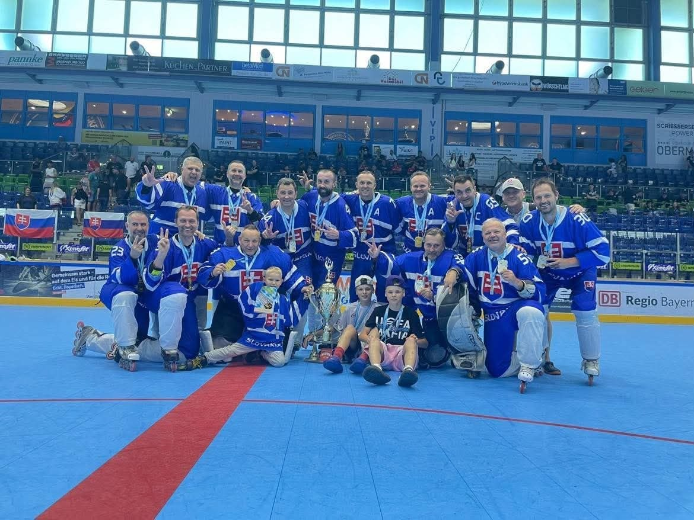
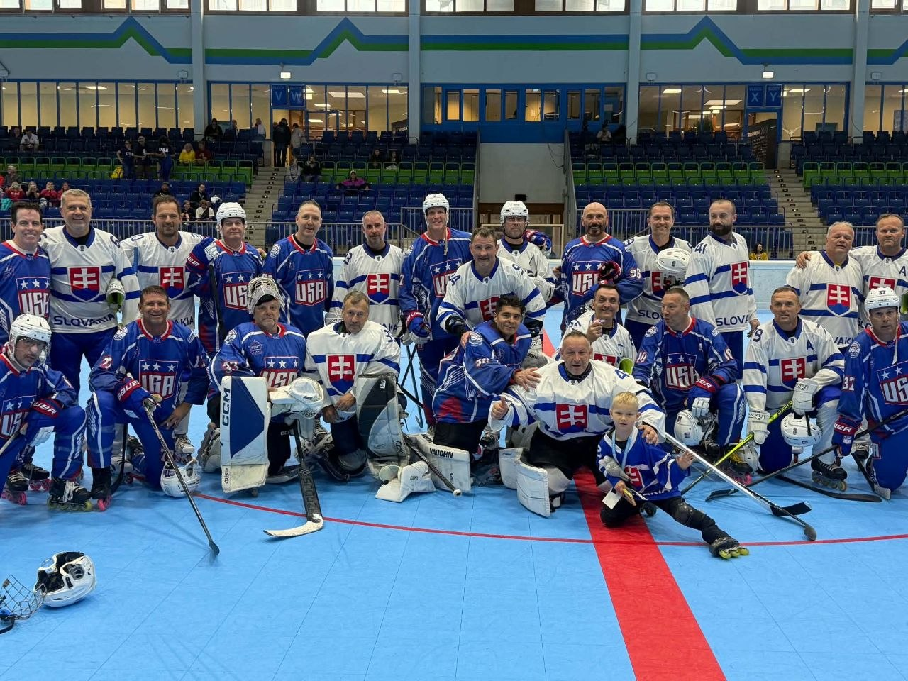
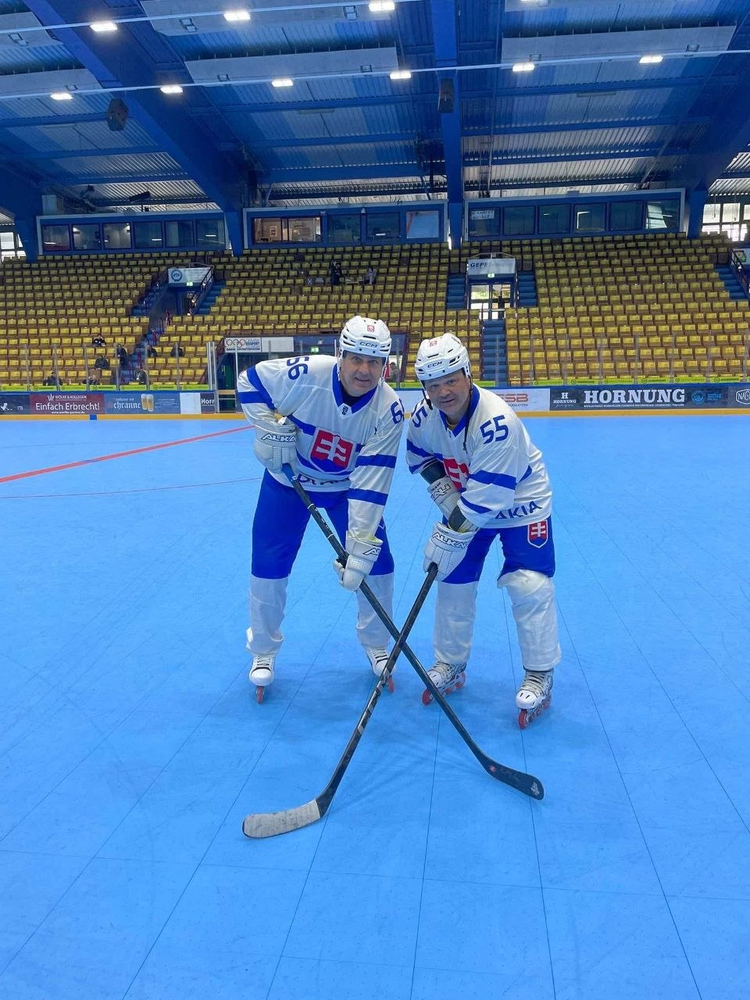

Veľmi vydarené MS veteránov prežil slovenský tím v kategórii Legiend (hráči 50+). Na MS síce odchádzal v pozícii obhajcov titulu a teda ašpirantov na boje o najvyššie priečky, avšak turnaj ukázal neustále stúpajúcu kvalitu každého z mužstiev a naplno preveril schopnosti a odolnosť tímu.
Už v skupinovej fáze odohrali slovenskí hráči veľmi vyrovnané zápasy, keď nestačili len na Kanadu. Napriek prehre sa im podarilo ísť do štvrťfinálových bojov z prvého miesta.
Po zvládnutí zápasu, ktorí je často nazývaný hranicou úspechu a neúspechu sa v semifinále postavili proti tradičnému rivalovi z Česka. V dramatickom zápase, keď sa najprv v závere zápasu podarilo dotiahnuť českému tímu z 3:5 na 5:5 sa predlžovalo. Našich poslal gólom pri avizovanom vylúčení súpera do finále Anton Lezo.
V ňom sa naši stretli s lepším z dvojice USA vs. Kanada. Finále rozhodovali znova maličkosti, avšak najmä skúsenosť a odolnosť. V závere si Slováci postrážili vedenie a vyhrali nad USA 5:4!
Skvelý kolektív tvoria silné individuality. Na hráčskom poli sa najviac darilo Antovi Lezovi, ktorý sa stal našim najproduktívnejším hráčom a 4x sa dostal medzi hviezdy stretnutia. Organizáciu, technické a finančné zabezpečenie zvládol (popri hráčskej úlohe) na výbornú Roman Pejchal.
MS sa konali v nemeckom Garmisch Partenkirchen a v danej kategórii sa predstavilo 12 mužstiev. Celkovo sa šampionátu zúčastnilo 48 družstiev v 3 mužských a jednej ženskej kategórii. Slovenský organizačný tím zároveň prevzal štafetu od organizátorov a v budúcom roku sa môžeme tešiť na majstrovstvá sveta veteránov v in-line hokeji na Slovensku. Bude to zároveň výzva, Slováci majú ambíciu postaviť mužstvá vo všetkých mužských kategóriách.
Výsledky zápasov
Skupinová fáza:
- SVK – GER 9:2
- SVK – CAN 1:2
- SVK – CZE 6:2
- SVK – USA 2:1
Play off:
- SVK – FRA 7:3
- SVK – CZE 6:5 pp
- SVK – USA 5:4
| Hráč | Body | Góly | Asistencie |
|---|---|---|---|
| Anton Lezo | 13 | 7 | 6 |
| Peter Kotlárik | 10 | 7 | 3 |
| Peter Foltín | 9 | 5 | 4 |
| Marián Horváth | 9 | 3 | 6 |



2026 - Patrik Pejchal